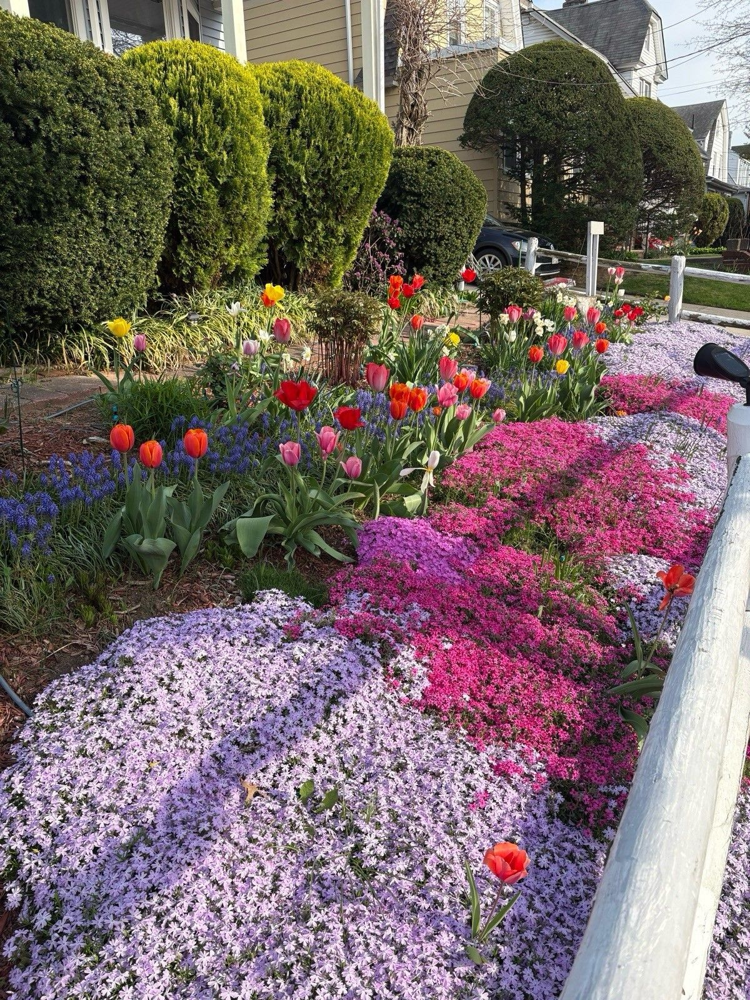
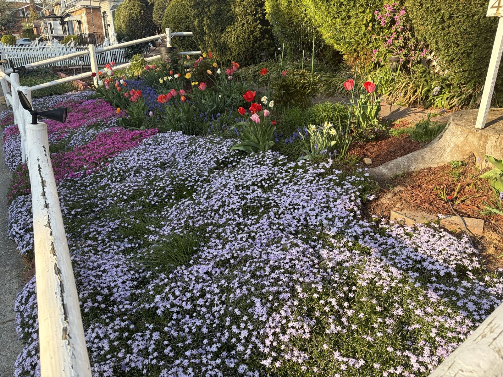

A Carpet of Creeping Phlox
Six years ago I planted eleven little creeping phlox plugs along the front fence because the strip was too steep to mow and I was tired of pretending I'd fix that. This is what eleven plugs turn into if you mostly leave them alone:

Three colors — lavender-blue, soft pink, and a magenta that refuses to be photographed accurately — have grown together into a single quilt that pours over the curb wall. For three weeks in April, strangers photograph my fence. The mail carrier told me she reroutes to end her loop here. This is the highest honor I have ever received.

The layering is the part I'm proudest of, because it's the part that took actual planning: phlox at ankle height, then a ribbon of grape hyacinth, then tulips, then the old hedges as a backdrop. Everything blooms in overlapping shifts so the slope never has an off week from late March to mid-May.

Care, honestly, is almost nothing: I shear the whole carpet lightly after it finishes blooming (it keeps the center from going bald), pull the odd weed that dares, and that's it. No watering after the first year, no feeding, no mowing that slope ever again. Best eleven plants I ever bought.